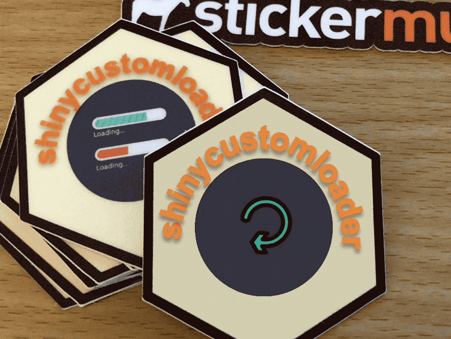

Making a Hexagon Sticker
Making hexagon stickers have become popular for R-packages with the range of packages associated with RStudio, such as ggplot2, knitr, devtools and so on, having its own hex stickers. For the sticker that I made for my R-package I found it easier, partly due to its long name, to use powerpoint to manipulate the image and create a semi-circular text.
 Making hexagon stickers have become popular for R-packages with the range of packages associated with RStudio, such as
Making hexagon stickers have become popular for R-packages with the range of packages associated with RStudio, such as ggplot2, knitr, devtools and so on, having its own hex stickers.
This trend even spanned a R-package hexSticker that can be found here.
Powerpoint template for hex stickers
For the sticker that I made for my R-package shinycustomloader, I found it easier, partly due to its long name, to use powerpoint to manipulate the image and create a semi-circular text. It took longer than what I had hoped to get the hexagon shape right. You may like to save your own time by downloading my powerpoint template here as a base to make your own.
The dimensions were set, as it is in hexSticker, so that you can print it according to http://hexb.in/sticker.html.
Using copyright images in hex stickers
It’s worth noting about copyright of images since you may like to use images in your hex sticker. If you created the image on your own then the copyright in general will rest with you and there is no problem. If you borrow images from others, you may need to provide attribution depending on their license permission.
In hex stickers, you don’t really have a room to add citations so you may like to use those that require no attribution. For free ones, you can find these using sites such as flickr under Public Domain works (CC0).
It is a bit painful to consider copyright issues but it is important to give due credit, acknowledgement, attribution etc to the creator of the work. I’ve gone to great lengths at times to search for CC0 images or have paid for work. Afterall, creative work is valuable and should be properly rewarded.
UPDATE 22/06 My sticker arrived! They are pretty good quality! I also got 16 which is more than the 10 sample they said on the website

These are from sticker mule. If you sign up with referral code here, both you and I will get some credit. You are, of course, welcomed to just go directly to the site to make the purchase.

UPDATE 20/06/2021 When ordering an R-package hex sticker from sticker mule, I choose Stickers > Die cut stickers > Custom dimension of 1.73” x 1.99”.